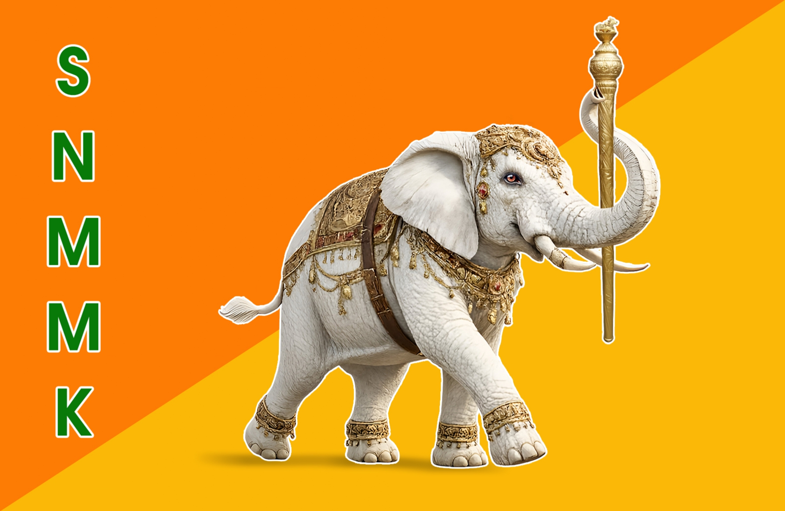
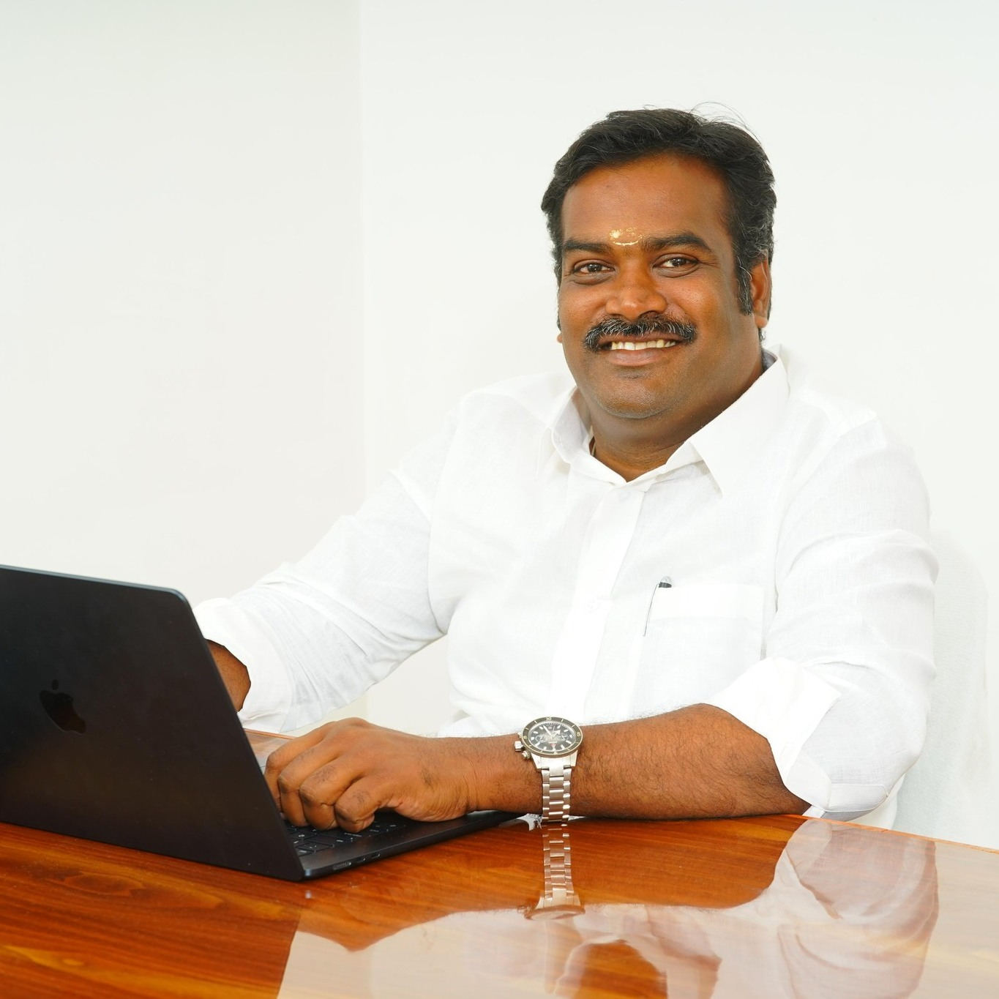

Sengol Neethi Makkal Munnetra Kazagam is a development reform movement focused on jobs, economic growth, justice, and people-centered governance.
SNMMK was founded to transform Puducherry through righteous governance, economic development, employment generation, and social justice.
Every government policy must create real jobs for the people.
Factories, fisheries, farms, and entrepreneurship drive growth.
Dignity, opportunity, and economic strength for every citizen.
Education to employment. Skills to income.

A leadership vision centered on justice, discipline, governance, and people-oriented development.
Email : admin@snmmk.com
Phone : +91 9898989898
Party Headquarters : No 37, 1st cross, Paris Nagar, Moolakulam, Puducherry, India